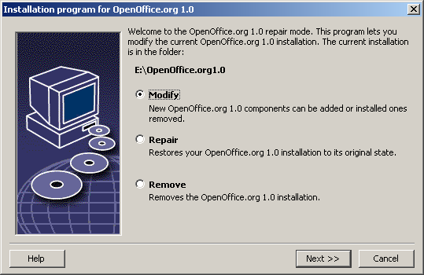

Appendix
The Appendix contains information about automated installation of OpenOffice.org under Unix, the printer administration program under the Solaris operating environment and under Linux, about modifying and repairing the installation as well as deinstalling OpenOffice.org.
Automated Installation under Unix
There is a special installation script available to help automate the installation of OpenOffice.org under Unix which can be used to install OpenOffice.org on the command line with or without graphical interface.
The installation script install defaults to a multi-user installation of OpenOffice.org (standard for Unix / Linux) and takes the following command line arguments:
|
|
prints the help message |
|
|
prints the version of OpenOffice.org to be installed |
|
|
installs OpenOffice.org into |
|
|
performs a single user installation of OpenOffice.org (default is a network installation) |
|
|
installs OpenOffice.org using the interactive mode |
Example
./install --prefix=/opt
makes a multi-user / network Phase 1 installation of OpenOffice.org into the directory /opt.
|
Individual users must still do a Workstation Installation before they will be able to use OpenOffice.org. However, the Workstation Installation will be automatically started the first time any user tries to run OpenOffice.org. |
Setting up Printer, Fax and Fonts under Unix
Under Unix, the printer administration program "spadmin" is provided to help you set up printers, faxes and fonts for use with OpenOffice.org.
Call the printer administration program "spadmin" as follows:
- Go to the
OpenOffice.org1.0/programdirectory. - Enter:
./spadmin
After it starts, the window of the printer administration program "spadmin" appears. That is where you can make all important settings.
During a network installation, the System Administrator first logs on as user root and calls the printer administration program "spadmin". He or she then creates a general printer configuration file called OpenOffice.org1.0/share/psprint/psprint.conf for all users. All changes are immediately available to all users in OpenOffice.org.
The system administrator can also add fonts for all users in the network installation. However, these fonts are available only after restarting OpenOffice.org.
Setting up Printers
Under Unix, OpenOffice.org only offers direct support for PostScript printers. Other printers must be set up as described in the section Printer Drivers in OpenOffice.org. OpenOffice.org automatically provides a printer with the default driver for each system queue. You can add additional printers as needed.
Adding a Printer
- Click the New Printer button.
- Select the Create Printer option and click Next.
- Select the appropriate driver for your printer. If you are not using a PostScript printer or your model is not listed, use the "Generic Printer" driver or follow the steps below. You can also add new drivers using the Import button or delete unnecessary drivers using the Delete button (see below for details). Click Next.
- Choose a command line that you can use to print on your printer (for example,
lp -d my_queue). Click Next. - Give the printer a name and determine whether it should become the default printer. Click Finish.
- To print a test page, click on Test Page. If the test page fails to print or is incorrectly printed, check all settings as described in Change Printer Settings.
You now have a new printer in OpenOffice.org.
Printer Drivers in OpenOffice.org
- When installing a non-PostScript enabled printer, you must set your system so that PostScript can be converted into the language of the printer. We recommend using current PostScript conversion software such as Ghostscript. You should set up the "Generic Printer" in that case. Make sure the page margins are set correctly as well. You can find this information in the following sections.
- If you are in possession of a PostScript-enabled printer, you must always install a description file that adapts the printer (PostScript Printer Definition - PPD) so that you can utilize the paper tray selection, the duplex print function (if the printer has it) and any built-in fonts. You can also use the generic printer driver since it contains the most important data and is suitable for most printers. In that case, you will have to do without the paper tray selection and correctly set the page margins.
Some PPD files are installed as default files. If there is no matching PPD file for your printer, you will find various PPD files at http://www.adobe.com/products/printerdrivers/. You can also ask the manufacturer of your printer for PPD files. Unpack a suitable driver and connect it with spadmin to your system.
Drivers can be imported or deleted when creating a new printer.
- To import new drivers, click Import in the driver selection dialog. Click Browse to select the directory where you unpacked the PPD files. In the Selection of drivers list box, select the printer driver you want to install and then click OK.
- To delete a printer driver, select the printer driver and click Delete. Be sure that you do not delete the generic printer driver, and remember that drivers deleted from network installations are no longer available to other users who are using the same network installation.
- If the printer has more fonts built in than the usual PostScript fonts, you must also load the AFM files for these additional fonts. Copy the AFM files into the
OpenOffice.org1.0/share/psprint/fontmetricdirectory of the OpenOffice.org installation or into theOpenOffice.org1.0/user/psprint/fontmetricdirectory of the User Installation. You can find AFM files, for example, at ftp://ftp.adobe.com/pub/adobe/type/win/all/afmfiles/.
Changing Printer Settings
In the printer administration program "spadmin", select the printer from the Installed printers list box and click Properties. The Properties dialog appears containing several tab pages. This is where you can make settings that are used according to the PPD file of the selected printer.
- Select the command on the Command tab page. You can remove superfluous commands using the Remove button.
- On the Paper tab page, you can define the paper format and paper tray to be used as the default settings for this printer.
- On the Device tab page, you can activate the special options for your printer. If your printer can only print in black and white, choose "grayscale" under Color, otherwise choose "color". If switching to grayscale leads to unfavorable results, you can also select "color" under Color and see how the printer or PostScript emulator applies it. Furthermore, on this tab page you can set the precision with which colors are described as well as the PostScript level.
- The Font Replacement tab page allows you to select a printer font type available in the printer for each font type installed on your computer. This way you can reduce the data volume sent to the printer. Font replacement can be turned on or off for each printer individually.
- You should also set the page margins correctly on the Additional settings tab when using the generic printer drivers so that your printout is not cropped. You can also enter a description in the Comments field, which will also be displayed on the Print dialog.
Some of these settings can also be set per document/printout in the Print dialog or the Printer Settings dialog in OpenOffice.org via the Properties button.
Renaming or Deleting Printers
- Select a printer from the Installed printers list box.
- To rename the selected printer, click Rename. Enter an appropriate name in the dialog that appears and click OK. The name must be unique and should be chosen so that you can recognize the printer and the application. Printer names must be assigned the same for all users because, when documents are exchanged, the selected printer remains unchanged if the recipient has it under the same name.
- To delete the selected printer, click Remove. The default printer or a printer that has been created by the system administrator in a network installation cannot be removed using this dialog.
Selecting a Default Printer
- the Installed printers list box the default printer, double-click its name or click the Default button.
Using Fax Functionality
If you have already installed a fax package such as Efax or HylaFax on your computer, you can send faxes with OpenOffice.org.
- Click New Printer. This opens the Add Printer dialog.
- Select Connect a fax device. Click Next.
- Choose whether to use the default driver or another printer driver. Click Next. If you are not using the default driver, select the appropriate driver and click Next.
- Enter a command line with which to communicate with the fax in the following dialog. In the command line of each fax sent "
(TMP)" is replaced by a temporary file and "(PHONE)" by the telephone number of the recipient fax machine. If "(TMP)" occurs in the command line, the PostScript code is transmitted in a file, otherwise via standard input (i.e., as a pipe). Click Next. - Assign a name to your new fax printer and determine whether the telephone numbers (see below) marked in the text should be removed from the printout, or not. Click Finish.
You can now send faxes by printing to the printer that has just been created.
Enter the fax number as text in the document. You can also enter a field that takes the fax number from your active database. In any case, the fax number must start with the characters @@# and end with @@. A valid entry would have the form @@#1234567@@.
If these characters including the telephone number are not printed, activate the Fax number is removed from the printout option under Properties on the Command tab page. If notelephone number is entered in the document, a dialog prompting you for it will appear after the printout.
In OpenOffice.org you can also activate a button for sending faxes to a default fax. To do this, right-click the function bar, open the Visible Buttons submenu and click the Send Default Fax button. You can set which fax is used when this button is pressed under Tools - Options - Text Document - Print.
Remember to create one separate print job for each fax, otherwise, the first recipient would receive all the faxes. In the File - Form Letter dialog select the Printer option and then the Create Individual Print Jobs field.
Connecting a PostScript for PDF Converter
If a PostScript for PDF converter such as Ghostscript or Adobe Acrobat Distiller(tm) is installed on your computer, you can quickly create PDF documents in OpenOffice.org.
- Click New Printer. This opens the Add Printer dialog.
- Select Connect a PDF converter. Click Next.
- Choose whether to use the default driver, the Acrobat Distiller driver or another driver. Click Next. If you are not using the default driver or the Acrobat Distiller driver, select the appropriate driver and click Next.
- In the next dialog, enter a command line with which to communicate with the PostScript->PDF Converter. Moreover, enter the directory where the PDF files created should be saved. If you do not provide this directory, the user's home directory will be used. In the command line of each created PDF document "
(TMP)" is replaced by a temporary file and "(OUTFILE)" by the target file, the name of which is created from the document name. If "(TMP)" occurs in the command line, the Postscript code is transmitted in a file, otherwise via standard input (i.e., as a pipe). If Ghostscript or Adobe Acrobat Distiller is in the search path, you can use one of the predefined command lines. Click Next. - Assign a name to your new PDF converter. Click Finish.
You can now create PDF documents by printing to the converter that has just been created.
Installing Fonts
When you are working with OpenOffice.org you might notice that a different number of fonts is provided depending on the document type being used. This is because not all of the fonts can be used in every case.
- Therefore, only those fonts will be shown in the font selection box when working with a text document which can also be printed, as it is assumed that you will only want to use those fonts that you can actually have printed on paper.
- In an HTML document or in online layout, only fonts that are available on screen are offered.
- On the other hand, when working with spreadsheets and drawings you will be able to use all of the fonts that can be either printed or shown on the screen.
OpenOffice.org tries to have the display on screen correspond to the printout (WYSIWYG). Possible problems using the font are shown in the bottom margin of the dialog you open by choosing Format – Character.
Adding Fonts
You can integrate additional fonts in OpenOffice.org. Fonts which you integrate are available exclusively to OpenOffice.org and can be used with various Xservers without your having to install them there. To make the fonts available to other programs as well, proceed as usual by adding the fonts to your Xserver. OpenOffice.org can display and print out PostScript Type1 fonts as well as TrueType fonts (including TrueType Collections).
To integrate additional fonts in OpenOffice.org, proceed as follows:
- Start spadmin.
- Click Fonts.
- All fonts added for OpenOffice.org are listed in the dialog that appears. You can remove selected fonts using the Remove button or add new fonts with the Add button.
- Click Add. The Add Fonts dialog appears.
- Enter the directory from which you want to add the fonts. Press the ... button and select the directory from the path selection dialog or enter the directory directly.
- Now a list of the fonts from this directory appears. Select the fonts you want to add. To add all the fonts, click Select All.
- With the Create soft links only check box you can determine whether the fonts are to be copied into the OpenOffice.org directory or only symbolic links are to be created there. If the fonts to be added are on a data medium that is not always available (such as a CD-ROM), you must copy the fonts.
- Click OK. The fonts will now be added.
In the case of a network installation, the fonts are installed in that installation if possible. If the user has no write access rights, the fonts will be installed in the user installation so that only the user who installed them can access them.
Deleting Fonts
To delete fonts, proceed as follows:
- Start spadmin.
- Click Fonts.
- All fonts added to OpenOffice.org are listed in the dialog that now appears. Select the fonts you want to delete and click Delete.
You can delete only the fonts that have been added for OpenOffice.org.
Renaming Fonts
You can also rename fonts added for OpenOffice.org. This is especially useful for fonts that contain several localized names (such as an English and a Japanese name). There are also fonts that contain an unreadable name. You can replace this with a suitable name.
- Start spadmin.
- Click Fonts.
- Select the fonts you want to rename and click Rename.
- Enter a new name in the dialog that appears. If the font contains several names, these names will serve as suggestions in the combo box where you enter the new name.
- Click OK.
If you select several fonts to rename, one dialog appears for each selected font.
If you have selected a TrueType Collection (TTC), one dialog appears for each of the fonts contained in it.
Installing a patch under the Solaris™ Operating Environment
To carry out a correct installation, the system patches described in the chapter System Requirements have to be installed. To install a system patch, proceed as described in the following example for patch #106327-08. In this example, we assume that the patch is compressed in the file 106327-08.zip, e.g. after downloading it from SunSolve
- Log in to the system with root access rights:
su - - Create a temporary directory for unpacking the compressed patch file, e.g. /tmp/patches.
mkdir /tmp/patches - Copy the compressed patch file to this directory and unpack it there:
unzip 106327-08.zip - Install the patch using the command patchadd:
patchadd 106327-08 - After successful installation of the patch, you can remove the temporary directory:
rm -rf /tmp/patches
|
Use the command showrev -p or patchadd -p to display a list of the patches already installed on your system. To deinstall a patch, enter the command patchrm. |
Modifying the OpenOffice.org Installation
Calling the Setup program again after OpenOffice.org is already installed leads you to a dialog that allows you to either modify, repair or remove an existing installation.
You can also call the setup program from the installation directory. If the setup program recognizes a OpenOffice.org installation, it will offer to repair the version on the hard drive.
Modify
If you select the Modify option, you will see the same dialog as for the Custom Installation. This dialog enables you to define which OpenOffice.org components you want to add or remove.
The gray boxes represent the components which have not been installed. When you click a gray box, it will become colored indicating that that component will also be installed.
The components that have already been installed have a colored box in front of them. When you click such a box, it will be highlighted by a red mark which indicates that that component will be deleted from the installation.
A plus sign in front of a component indicates that there is a group of components to be found there. To view the whole group, click the plus sign. Now you can select the individual components to install or delete.
|
Please note that the graphics filters are listed under the "optional components". |
Repair
Choose the Repair option in the OpenOffice.org Setup program to repair your OpenOffice.org when entries in the system registry are no longer correct. The repair function will try to restore unintentionally deleted program files.
Remove
Deinstallation deletes OpenOffice.org entries contained in the registry of the corresponding operating system and also the files mentioned in the previous paragraph. Furthermore almost all of the files and folders in the OpenOffice.org directory will be deleted except for those that you have created or altered after having installed the program or those needed by the setup program itself. Therefore, your documents and most of the settings will be kept. When working under Windows you can activate/ deactivate a check box which decides if files created in the OpenOffice.org folder are also to be deleted or kept.
|
If you cannot immediately delete some of the program files under Windows, delete them directly after restarting your system. |
If you want to remove the server installation on the network, you have to completely delete the entire OpenOffice.org folder on the server. All user installations based thereon will be automatically deactivated.
Setup Parameters
The parameter -repair calls the setup program and repairs OpenOffice.org without any dialogs being displayed.
The parameter -net or -n starts the server part of the network installation.
In the parameter -D:destination_path the information you enter in place of "destination_path" specifies the path where OpenOffice.org is to be installed.
In the parameter -F:application_name the information you enter in place of "application_name" specifies the name of an application that is to be started immediately after installation.